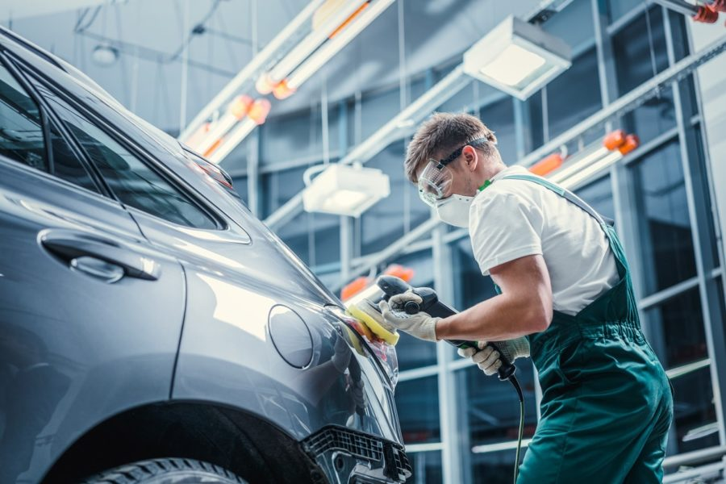
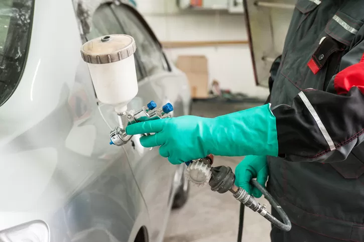
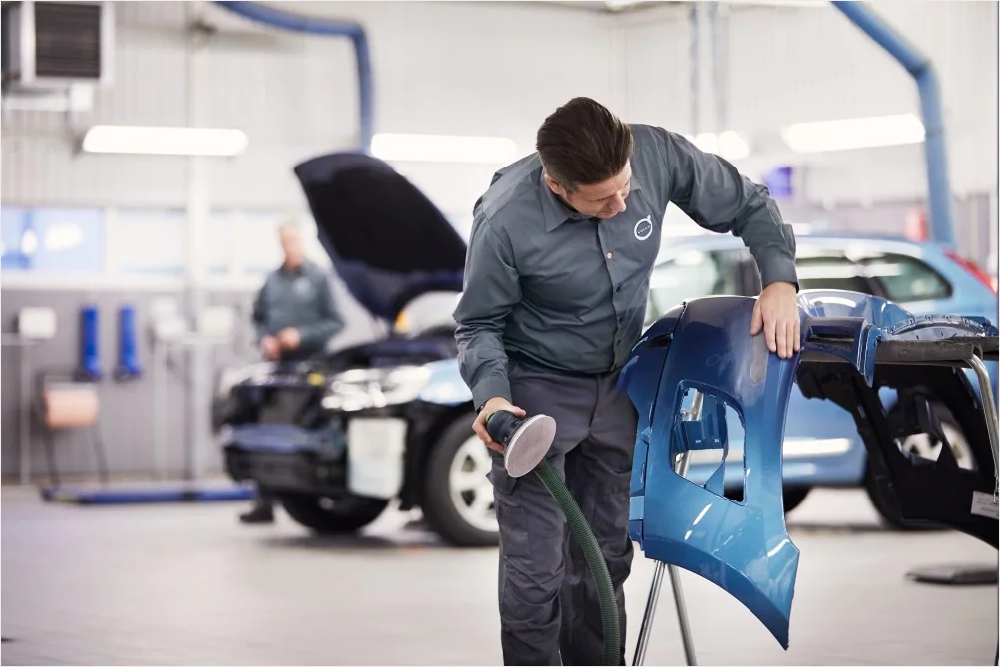

BENGKEL PUTRA PRIMA KEDOYA
Body Repair
Seiring berjalannya waktu, body mobilmu bisa saja mengalami kerusakan. Mulai dari baret, gores, penyok, hingga kerusakan lain yang lebih parah. Jika body mobil sudah tergores atau rusak, kamu memerlukan body repair sebagai solusinya. Body repair artinya perbaikan body mobil yang rusak agar kembali bagus.
Bengkel kami juga menyediakan jasa body repair seperti berikut :
- Perbaikan full body.
- Pengecatan kap mesin dan atap mobil.
- Pengecatan full body.
- Mengamplas mobil untuk cat ulang.
- Memperbaiki body mobil yang mengalami baret dan penyok.
- Poles mobil, agar cat mobil anda kelihatan lebih awet dan membuat cat mobil anda terlihat lebih mengkilap. Melakukan pemolesan juga dapat menghilangkan baret pada mobil anda.
- Reparasi spion, ban dan jok mobil.


